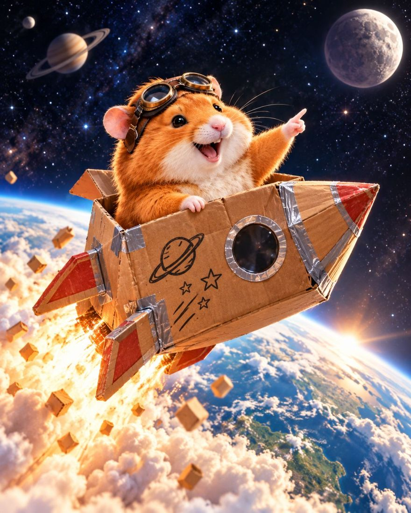
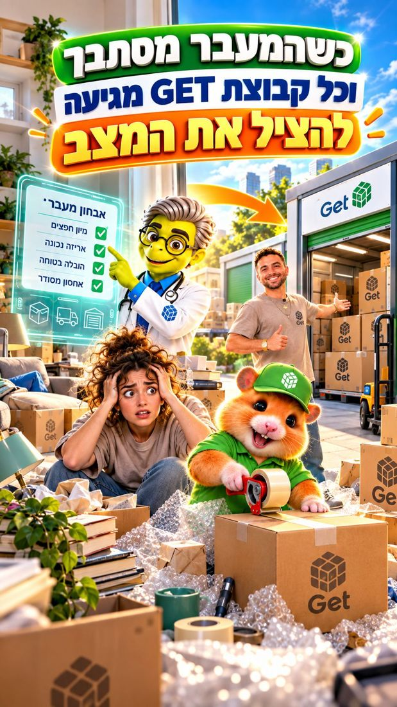
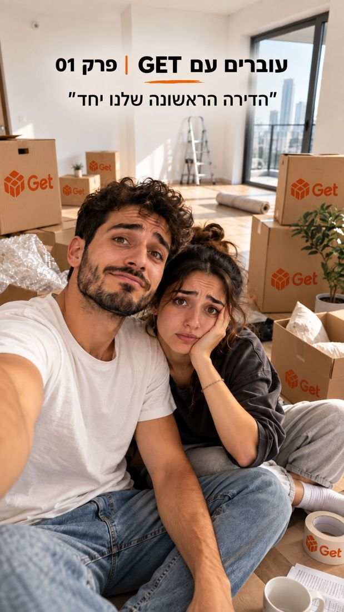
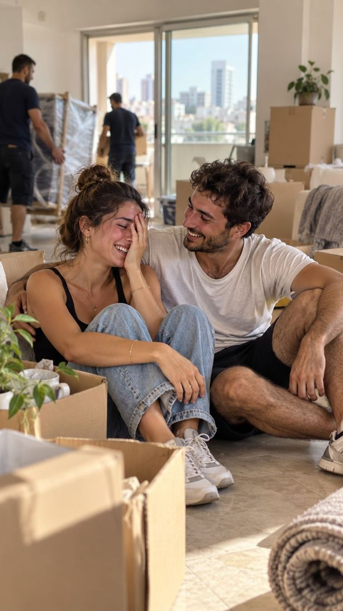
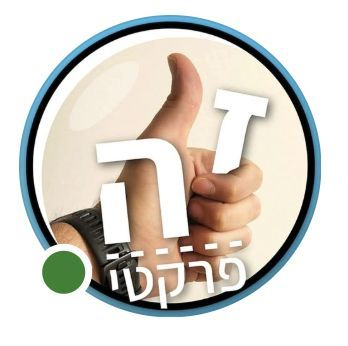
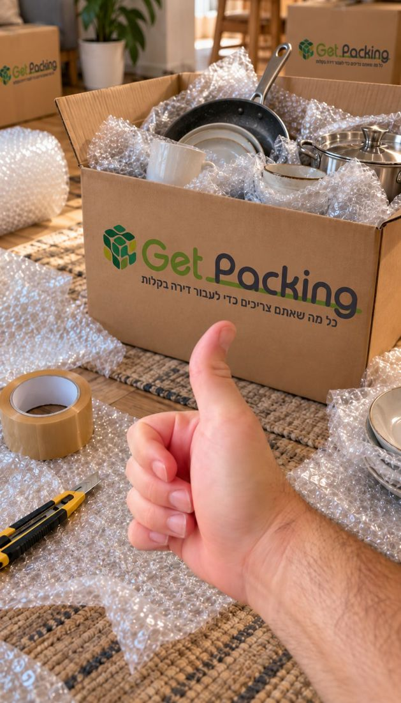
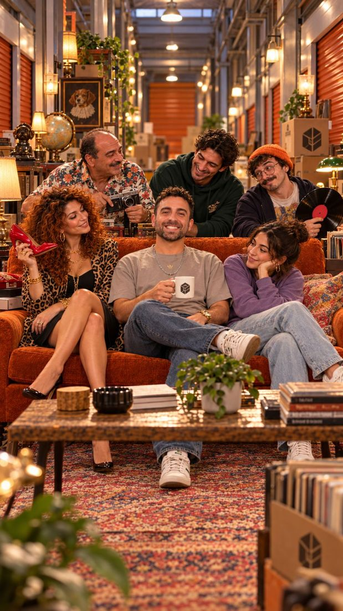
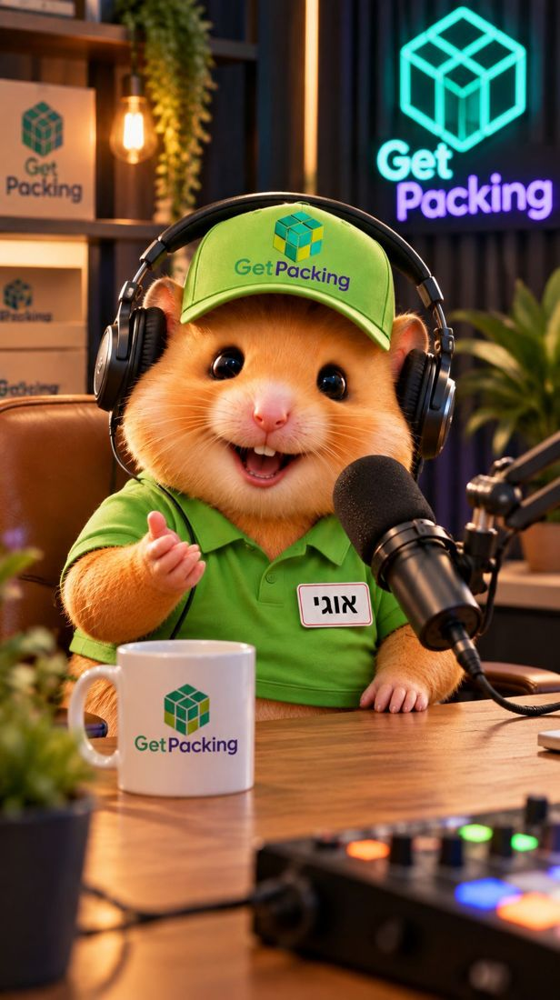

סיכום של Get Packing, Get Moving ו-Get Storage בפייסבוק, באינסטגרם ובטיקטוק.
במהלך השנים נבנו לכל מותג של GET שפה ודמות משלו: אוגי ב-Get Packing, ד״ר מוב ב-Get Moving והדייר של Get Storage.
ב-2027 אנחנו מציעים לקחת את הנכסים האלה ולהרחיב אותם לעולמות תוכן גדולים יותר: סדרות, פורמטים קבועים, שיתופי פעולה עם יוצרים ותוכן שמחבר בין שלושת המותגים.
המטרה היא לא עוד פוסטים. המטרה היא לבנות ל-GET נכסי תוכן שאנשים מזהים, מחכים להם וחוזרים אליהם.

אוגי, ד״ר מוב והדייר נפגשים לראשונה בעולם תוכן משותף, עם קרוסאוברים ועלילות מתמשכות.
סדרת דוקו על אנשים אמיתיים ברגעי מעבר ושינוי, ו-GET משתלבת בתוך הסיפור.
שיתופי פעולה עם משפיענים בדיוק כשהם עוברים דירה, משפצים או משנים בית.
שיתוף פעולה קבוע עם שחר לוי: תוכן שימושי על אריזה, בית, אחסון ומעבר.
הדייר מקבל שכנים ודמויות קבועות, והמחסנים הופכים לסדרת קומדיה מתמשכת.
פורמט ריאיונות הומוריסטי: בכל פרק אורח אחר מראיין את אוגי.
שלושה מותגים. שלוש דמויות. עולם תוכן אחד.

לכל פרק תסריט מרכזי, הפקה ייעודית ושילוב של Live Action ו-AI בהתאם לדמויות. מהפקה אחת יוצאים:
לקוח שמכיר את Get Packing נחשף באופן טבעי גם ל-Get Moving ול-Get Storage, ולהפך. כך GET נתפסת כפתרון כולל לעולם המעבר ולא כשלושה שירותים נפרדים.
נכסי תוכן משותפים וחזקים יותר, זכירות גבוהה לדמויות וציפייה לפרק הבא. קרוסאוברים מייצרים רגעים גדולים יותר, מצחיקים יותר וShareable יותר.
מאחורי כל מעבר דירה יש סיפור.
אנשים עוברים כי הם מתחילים זוגיות, מקימים משפחה, חוזרים מחו״ל או פותחים פרק חדש. בכל פרק נלווה אדם, זוג או משפחה מהבית הישן ועד לרגע שבו מתחיל הפרק הבא. GET נוכחת לאורך הדרך, אבל הסיפור שייך לאנשים.

רגעים מצחיקים, מרגשים ומזוהים מתוך המעבר.
הבית הישן, תהליך המעבר והבית החדש.
הרגעים הלא מתוכננים של יום המעבר.
לשימוש בפיד וב-Stories.
שירותי GET מופיעים בתוך סיטואציה אמיתית שבה הצורך בהם ברור, בלי לעצור את התוכן כדי למכור. GET נתפסת כמותג שמלווה אנשים בתקופות של שינוי.
תוכן אנושי ורגשי מעבר להומור ולמוצר. סיפורים אמיתיים מייצרים הזדהות, זמן צפייה גבוה יותר, שיתופים ותגובות, ומגיעים לקהלים חדשים.
משפיענים, בדיוק ברגע שבו GET באמת רלוונטית.
במקום רשימת משפיענים קבועה מראש, נאתר לאורך השנה יוצרים שנמצאים באמת במהלך מעבר: דירה חדשה, שיפוץ, מעבר לגור ביחד, חזרה מרילוקיישן. GET נכנסת לסיפור שהם כבר משתפים.

כי החיבור לא צריך להיות מומצא. הקהל כבר יודע שהיוצר עובר דירה, עוקב אחרי התהליך ורוצה לראות מה קורה הלאה.
חשיפה של שלושת המותגים בתוך צורך צרכני אמיתי, ברגע שבו השירות רלוונטי במיוחד. עובדים עם יוצרים שונים לפי הזדמנויות, בלי להתחייב מראש לפנים קבועות.
תוכן אותנטי יותר, קהלים חדשים בכל שיתוף פעולה, כמה נקודות מגע לאורך תהליך שלם ולא Reel פרסומי בודד.

שחר לוי: שותף תוכן קבוע לעולמות הבית, האריזה והאחסון.
היוצר וההנדימן שמאחורי "זה פרקטי": DIY, כלים, פתרונות לבית, סדר וארגון. הקהל שלו כבר מגיע אליו בשביל פתרונות פרקטיים, בדיוק בסיטואציות שבהן Packing ו-Storage רלוונטיים.
הפעילות המוצעת: שיתוף פעולה קבוע, חודשי או רבעוני, ולא סרטון חד-פעמי. בכל פרק שחר לוקח בעיה אמיתית מעולם המעבר ומראה איך לפתור אותה. (נתוני קהל לפי אתר "זה פרקטי")

במקום לבקש משחר להמליץ על GET, נבנה איתו סדרה שימושית שעומדת בפני עצמה. המוצרים והשירותים של GET הם הכלים שבהם הוא פותר את הבעיה.
GET מתחברת לדמות שנתפסת כפרקטית ומקצועית, מול קהל שבאמת צריך את המוצרים. סרטונים כאלה ממשיכים לצבור צפיות חודשים אחרי הפרסום.
תוכן עם ערך גבוה של Save ו-Share. הצופה שומר את הסרטון לקראת המעבר הבא וחוזר אליו כשהשירות באמת רלוונטי.
הבחור שגר במחסן מקבל שכנים.

המחסן מפסיק להיות רק המוצר שצריך לדבר עליו, והופך לבמה שבה התוכן קורה. גישה, גודל, פרטיות, סדר ואחסון לטווח ארוך נכנסים לתסריט בלי להפוך את הסרטון להסבר שירות.
יותר סיטואציות להצגת השירות וסוגי השימוש במחסן, ונכס מותג שממשיך להתפתח במקום להמציא כל חודש שמונה רעיונות נפרדים.
Recurring Cast מייצר היכרות, המשכיות ובדיחות פנימיות. בשלב הזה אנשים כבר עוקבים אחרי סדרה, לא רק צופים בתוכן של מותג.
הפודקאסט שאף אחד לא ביקש מאוגר לפתוח, אבל כולם ירצו לראות.
בכל פרק משפיען, סלב או קומיקאי מתיישב מול אוגי. הטוויסט: האורח מראיין את אוגי. אוגי בטוח שהוא הכוכב, ובדרך מופרכת לגמרי כל תשובה שלו מגיעה לקרטונים, לפצפצים או ל-Get Packing. המותג נכנס דרך הפאנץ׳.

עם הזמן הקהל ילמד מי זה אוגי, מה הוא אוהב, מה מעצבן אותו ומה הוא חושב על העולם.
האורח זורק לאוגי אנשים, חפצים וטרנדים, ואוגי מחליט.
האורח מציג בעיה אמיתית, ואוגי נותן לה פתרון מפוקפק.
שאלה שנבחרה מהתגובות.
"אם היית עובר מחר ויכול לקחת רק ארגז אחד, מה היית מכניס אליו?"
אוגי הופך לנכס מותג משמעותי שאפשר לחבר אליו אורחים וקהלים חדשים, גם בעמודים של המפורסמים והמשפיענים.
Get Packing מקבלת דרך לדבר על מגוון רחב של מוצרים וסיטואציות בלי לחזור שוב ושוב על סרטוני מוצר.
מוכנים להמראה? נשמח לצאת יחד ל-2027.